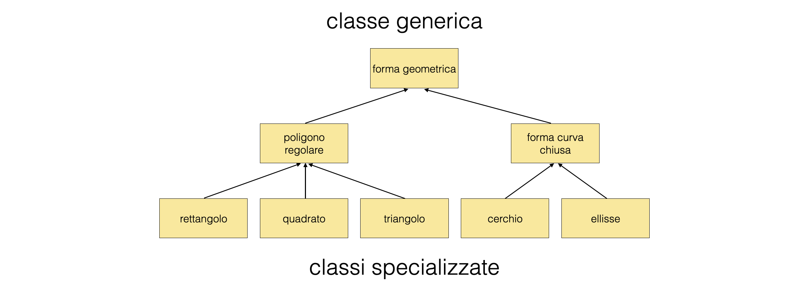
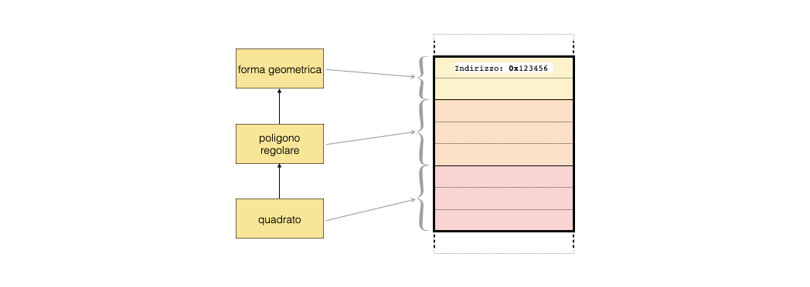

Approfondimento A2: programmazione ad oggetti: l’ereditarietà public
Contents
Approfondimento A2: programmazione ad oggetti: l’ereditarietà public¶
A2.1 Introduzione¶
nella programmazione ad oggetti, la traslazione dalle funzioni ai metodi delle funzionalità dei programmi produce necessariamente una proliferazione di classi per svolgere i compiti dei programmi
spesso succede che classi simili implentino comportamenti comuni insieme a comportamenti specifici per ciascuna di esse
il meccanismo dell’ereditarietà permette di evitare di reimplementare comportamenti comuni, definendoli soltanto una volta per una classe base, facendo in modo che vengano ereditati da diverse classi derivate
le classi derivate, dunque, adattano ed estendono comportamenti generali definiti nella classe base

A2.1.1 Rappresentazione grafica¶
il meccanismo di ereditarietà
publicintroduce una gerarchia fra classi: ogni classe derivata è un caso particolare della classe base. Questo concetto è noto come la regola is-a. 
A2.1.2 Problemi di privacy¶
nelle classi, i membri ed i metodi sono divisi in parte
publice parteprivate: come funziona l’accesso nel caso dell’ereditarietà?i membri e metodi
publicdelle classi base sono accessibili alle classi derivatei membri e metodi
privatedelle classi base non sono accessibili alle classi derivateesiste una terza catergoria: i membri e metodi
protecteddelle classi base non sono accessibili al di fuori della classe base, restando accessibili alle classi derivate.
A2.2 Implementazione dell’esempio delle forme geometriche¶
A2.2.1 La classe base: forma¶
la classe base per le forme geometriche ha un contenuto molto semplice:
class forma { public: forma (double area = -1.) : m_area (area) {} ; ~forma () {} ; double area () const { return m_area ; } ; protected: double m_area ; } ;
il membro
m_areaèprotectedperché sia accessibile anche alle classi derivatein questo caso non ci sono
private, ma si potrebbero mettere
un oggetto di tipo
formapuò essere istanziato in un programmaC++forma forma_base ; cout << forma_base.area () << endl ;
A2.2.2 Una classe derivata: quadrato¶
La sintassi per definire una classe derivata pubblicamente è la seguente:
class quadrato : public forma { public: quadrato (double lato = 1.) : m_lato (lato), forma (lato * lato) {} double lato () const { return m_lato ; } void cambia_lato (double lato) { m_lato = lato ; m_area = m_lato * m_lato ; return ; } ; ~quadrato () {} ; private: double m_lato ; } ;
il membro
m_latoè dichiaratoprivateperché nella progettazione della struttura di ereditarietà non ci sono classi derivate che debbano accedervii metodi specifici della classe quadrato
si aggiungono a quelli della classe baseil membro
m_areaè accessibile anche dalla classequadrato
A2.2.3 La classe derivata nel programma principale¶
nella funzione
main, o in qualunque altra funzione dove venga utilizzato, per un oggetto di tipoquadratosi possono chiamare i metodi pubblici sia della classe base che di quella derivata:quadrato forma_quadrata (3.) ; cout << "area: " << forma_quadrata.area () << endl ; cout << "lato: " << forma_quadrata.lato () << endl ; forma_quadrata.cambia_lato (4.) ; cout << "area: " << forma_quadrata.area () << endl ;
la consistenza delle informazioni (ad esempio, che l’area sia calcolata correttamente) dipende dalla bontà dell’implementazione
A2.2.4 Un’altra classe derivata: il rettangolo¶
da una medesima classe base possono ereditare diverse classi derivate:
class rettangolo : public forma { public: rettangolo (double lato_o = 1., double lato_v = 1.) : m_lato_o (lato_o), m_lato_v (lato_v), forma (lato_o * lato_v) {} double lato_o () const { return m_lato_o ; } double lato_v () const { return m_lato_v ; } void cambia_lato_o (double lato) { m_lato_o = lato ; m_area = m_lato_o * m_lato_v ; return ; } void cambia_lato_v (double lato) { m_lato_v = lato ; m_area = m_lato_o * m_lato_v ; return ; } ~rettangolo () {} ; private: double m_lato_o ; double m_lato_v ; } ;
in questo caso, sono necessari più metodi e più membri per descrivere le proprietà del rettangolo
A2.2.5 La regola is-a: una specializzazione¶
L’ereditarietà delle funzionalità delle classi base nelle classi derivate è un aspetto importante della progettazione del codice sorgente e riguarda il comportamento di una classe
ad esempio, per il
C++un quadrato non è una specilizzazione di un rettangolo, nonostante dal punto di vista geometrico il quadrato sia un rettangolo con lati ugualiad un rettangolo si può modificare la lunghezza di un lato e rimane un rettangolo, mentre se si modifica la lunghezza di un lato di un quadrato, la forma geometrica diventa un rettangolo generico
quindi la classe
quadratonon è una specializzazione della classerettangolo, perché non tutte le funzioni direttangolopossono essere applicate aquadrato
A2.3 ereditarietà e polimorfismo¶
quando due o più classi sono inserite in una gerarchia ereditaria, un puntatore alla classe base può essere utilizzato per referenziare anche oggetti delle classi derivate
questo è possibile dal fatto che la memoria dove sono salvati gli oggetti viene utilizzata a fette (memory slicing), in modo che regioni separate della memoria corrispondano a parti differenti dell’oggetto considerato: 
nello spazio occupato in memoria dall’oggetto
quadrato, la prima sezione (gialla) contiene la parteformadell’oggetto,la seconda (arancione) contiene ciò che serve in più per realizzare il
poligono regolare,la terza (rossa) contiene ciò che serve in più rispetto al
poligono regolareper realizzare ilquadrato
in questo modo, noto l’indirizzo della cella iniziale a seconda del tipo da considerare il
C++è in grado di ricostruire l’oggetto corrispondente
A2.3.1 Compatibiità fra tipi ereditariamente correlati¶
Il memory slicing significa che sia lecito assegnare il puntatore di una classe derivata a quello di una classe base, senza incorrere il problemi di accesso alla memoria:
quadrato forma_quadrata (3.) ; forma * puntatore = & forma_quadrata ;
Chiaramente l’opposto non è ammissibile, perché l’oggetto
quadratooccupa più posto in memoria dell’oggettoforma
A2.3.2 Il calcolo dell’area¶
Nell’implementazione delle funzioni
rettangolo::cambia_lato_o (double),rettangolo::cambia_lato_o (double),quadrato::cambia_lato (double)l’area della forma geometrica è stata ricalcolata, perché sono state modificate le caratteristiche geometriche della formaE’ naturale aggiungere un metodo
calcola_areaper tutte le forme geometriche, in modo che per ciascuna di esse il calcolo venga fatto sempre allo stesso modoE’ anche naturale immaginare che questo metodo sia parte della classe
forma, perché esiste per ogni classe derivata, e venga poi reimplementato da ogni classe derivata
A2.3.3 Dynamic binding¶
A partire da un puntatore ad una classe base, il
C++è in grado di comprendere dinamicamente di che tipo sia l’oggetto referenziato dal puntatore ed applicare il metodo correttoPer ottenere questo comportamento, è necessario definire i metodi da reimplementare con la parola chiave
virtual
A2.3.4 Implementazione del metodo calcola_area¶
Nella classe base, la funzione
calcola_areanon ha informazioni sufficienti per fare alcun conto, quindi è implementata in modo banale informa:virtual double calcola_area () { return -1. ; }
La parola chiave
virtualanticipa al compilatore
che le classi derivate potrebbero reimplementare questo metodo e che bisogna scegliere quella giusta in fase di esecuzione, a seconda del tipo effettivo di ciascun puntatore
Nella classe derivata la funzione viene reimplementata con le informazioni necessarie, ad esempio per
quadrato:virtual double calcola_area () { m_area = m_lato * m_lato ; return m_area ; }
A2.3.5 l’ulitizzo nel programma¶
Con questo accorgimento, grazie al dynamic binding il programma riconosce durante l’esecuzione il tipo di oggetto da considerare.
Le seguenti istruzioni:
quadrato forma_quadrata (3.) ; forma * puntatore = & forma_quadrata ; cout << puntatore->calcola_area () << endl ;
restituiranno a schermo il valore
9, invece che-1.
A2.3.6 Il distruttore di una classe virtuale¶
Il dynamic binding si intreccia con il fatto che un puntatore potrebbe venire allocato dinamicamente, quindi poi distrutto con l’operatore
deleteSe l’operatore
deleteviene chiamato su un puntatore alla classe base, per essere certi che venga chiamato anche il distruttore della classe derivata è necessario dichiarare sempre il distruttore di tipovirtualquando si utilizzi il polimorfismo
A2.4 Le interfacce e le classi puramente virtuali¶
Una classe base in
C++può essere utilizzata soltanto per definire i comportamenti di un insieme di classi derivate, deputanto l’implementazione alle classi derivate.Chiaramente, una classe senza implementazione non può essere utilizzata per definire oggetti, perché il tipo è incompleto.
Una classe di questo genere è detta
puramente virtuale.
A2.4.1 Le interfacce¶
La definizione di una classe puramente virtuale che detti i comportamenti delle classi derivate viene spesso utilizzata per garantire che oggetti definiti all’esterno di un programma o di una libreria abbiano comportamenti compatibili con il programma o la libreria stessi.
Le classi puramente virtuali dalle quali si eredita il comportamento desiderato sono dette interfacce.
A2.5 Il polimorfismo ed i contenitori STL¶
il comportamento polimorfico di una catena di ereditarietà permette di riempire contenitori STL con un insieme eterogeneo di oggetti
infatti, un contenitore di puntatori ad oggetti di una classe base può essere riempito con i puntatori ad oggetti di diverse classi derivate ed il
C++capisce run-time quale funzione interpellaremap<string, forma *> m_forme ; forma forma_base ; m_forme["base"] = & forma_base ; quadrato forma_quadrata (3.) ; m_forme["quadrato"] = & forma_quadrata ; rettangolo forma_rettangolare (3., 2.) ; m_forme["rettangolo"] = & forma_rettangolare ; for (map<string, forma *>::const_iterator it = m_forme.begin () ; it != m_forme.end () ; ++it) cout << it->first << " ha area " << it->second->calcola_area () << endl ;